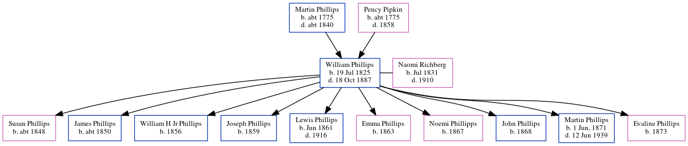

William Hiram Phillips 1825 - 1887
[ Home ] | [ Calendar ] | [ Surnames Index ] | [ Census Index ] | [ Family History ]A virginia phillips said that he was a carpenter and contractor. he built grady hospital in atlanta. he also worked on the masonic temple in atlanta. the 1850 census confirms he was a carpenter and the 3rd of 4 children of Martin Phillips and Pency Pipkin, William Phillips, the great-great-grandfather of Michele Copp (née Phillips), was born in Sumter, Sumter, South Carolina, USA on Jul 19, 18251,2,3,4,5,6 and had 10 children with Naomi C Richberg: Susan Caroline, James Henry, William H jr, Joseph E, Lewis W, Emma Rena, Noemi Ella, John A., Martin Eugene and Evaline E.
During his life, he was living in Sumterville, Sumter, South Carolina in 18501; in Sumter, Sumter, South Carolina in 18602; at his birthplace in 18703 and in 18804; and in Sumter, South Carolina, USA7.
He died on Oct 18, 1887 in Sumter, Sumter County, South Carolina6 and was buried there after Oct 18, 18876.
Parents
- Martin was born c. 1775
- Pency Patrick was born c. 1775
Children
- Susan Caroline was born c. 1848
- James Henry was born c. 1850
- William H jr was born in 1856
- Joseph E was born in 1859
- Lewis W was born in Jun 1861
- Emma Rena was born in 1863
- Noemi Ella was born in 1867
- John A. was born in 1868
- Martin Eugene was born on Jun 1, 1871
- Evaline E was born in 1873
Citations
- 1850 United States Federal Census Online publication - Provo, UT, USA: The Generations Network, Inc., 2005.Original data - United States of America, Bureau of the Census. Seventh Census of the United States, 1850. Washington, D.C.: National Archives and Records Administration, 1850. M432,
- 1860 United States Federal Census Online publication - Provo, UT, USA: The Generations Network, Inc., 2004.Original data - United States of America, Bureau of the Census. Eighth Census of the United States, 1860. Washington, D.C.: National Archives and Records Administration, 1860. M653, 1
- 1870 United States Federal Census Online publication - Provo, UT, USA: The Generations Network, Inc., 2003.Original data - 1870. United States. Ninth Census of the United States, 1870. Washington, D.C. National Archives and Records Administration. M593, RG29, 1,761 rolls. Minnesota. Minnes (Residence Post Office: Sumter)
- 1880 United States Federal Census Online publication - Provo, UT, USA: The Generations Network, Inc., 2005. 1880 U.S. Census Index provided by The Church of Jesus Christ of Latter-day Saints © Copyright 1999 Intellectual Reserve, Inc. All rights reserved. All use is subject to the limite
- OneWorldTree Online publication - Provo, UT, USA: MyFamily.com, Inc.
- U.S., Find A Grave Index, 1600s-Current Ancestry.com Operations, Inc.
- U.S. Public Records Index, Volume 2 Online publication - Provo, UT, USA: Ancestry.com Operations, Inc., 2010.Original data - Voter Registration Lists, Public Record Filings, Historical Residential Records, and Other Household Database Listings.Original data: Voter Registration Lists, Public
Family Tree
Generated by ged2site. Last updated on Jun 6, 2024